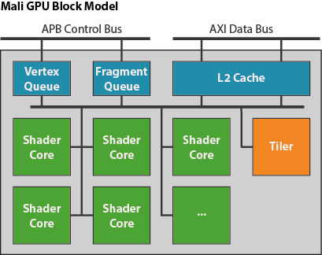
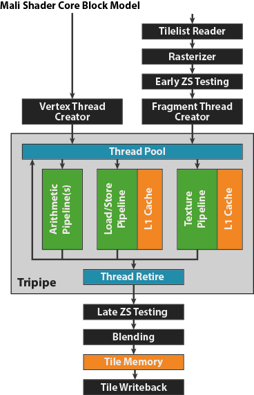

[译]The Mali GPU: An Abstract Machine, Part 3 - The Midgard Shader Core
在本系列的前两篇文章中我介绍了frame-level pipelining和tile based rendering architecture，旨在开发一个心智模型，供开发人员用于在优化其应用程序性能时解释图形堆栈的行为。
在这篇文章中我将组件最后一个组成部分完成这个抽象机器的开发：它就是 Mali GPU 本身。你应该已阅读了本系列中的前两篇博文，如果还没有的话，建议您先读那两篇。
GPU Architecture
Mali GPU 的 Midgard 产品线（Mali-T600 和 Mali-T700 系列）使用一个统一着色器核心架构，即设计中仅存在一种类型的着色器核心。此单一核心可以执行所有类型的可编程着色器代码，包括顶点着色器、片段着色器和compute kernels。
具体芯片中存在的着色器核心确切数量各不相同；我们的芯片合作伙伴可以根据其性能需求和芯片面积限制来选择实施的着色器核心数量。Mali-T760 GPU 可以从面向低端设备的单一核心升级到面向最高性能设计的 16 核心，但 4 到 8 个核心是最常见的。

GPU 的图形工作排在一双队列中，其一用于顶点/分块工作负载，其二用于片段工作负载，一个渲染目标的所有工作作为单一任务提交发送到各个队列中。两个队列中的工作负载可以由 GPU 同时处理，因而可以并行运行不同渲染目标的顶点处理和片段处理（有关这一管线化方法学的详细信息，请参见第一篇博文）。单一渲染目标的工作负载拆分为更小的部分，分散到 GPU 中的所有着色器核心；或者，对于分块工作负载（本系列的第二篇博文提供了分块方面的概述），则分散到固定函数分块单元中。
系统中的着色器核心共享一个二级 (L2) 缓存来改善性能，同时减少重复提取数据而造成的内存带宽。与核心数量一样，L2 的大小也可由我们的芯片合作伙伴配置，但 GPU 中每个着色器核心通常在 32-64KB 的范围内，具体取决于可用的芯片面积。此缓存与外部内存之间的内存端口数量和总线宽度也是可配置的，因此我们的合作伙伴可以调整其实施，来满足他们对性能、功耗和面积的需求。总体而言，我们的目标是达到每个核心每时钟写一个 32 位像素，因此可以合理地预计一个 8 核心设计拥有每个时钟周期总共 256 位的内存带宽（用于读取和写入）。
The Midgard Shader Core
Mali 着色器核心构建为多个固定函数硬件块围绕在一个可编程“Tripipe”执行核心周围。固定函数单元执行着色器运算的设置 - 如光栅化三角形或执行深度测试 - 或者处理着色器后的处理 - 如混合，或在渲染结束阶段写回相当于整个tile的数据。Tripipe本身是一个负责执行着色器程序的可编程部分。

The Tripipe
在Tripipe设计中，有三个类别的执行管线：一个处理算术运算，一个处理内存加载/存储和变量访问，另一个处理纹理访问。每个着色器核心有一个加载/存储管道和一个纹理管道，但算术管线的数量根据你使用的 GPU 而不同；如今出货的大多数芯片有两个算术管线，但是Mali-T880有三个。
Massively Multi-threaded Machine
在传统的 CPU 架构中，通常一个核心一次只执行一个线程；Tripiper设计则不同，它是一个大批量多线程处理引擎。Tripipe中可能同时运行数百个硬件线程，被着色的每个顶点或片段都创建有一个线程。这么多数量的线程可以隐匿内存延迟；如果有一些线程停下来等待内存也没关系，只要至少有一个线程可以执行，那么我们就能维持高效的执行。
Arithmetic Pipeline: Vector Core
算术管线 (A-pipe) 是 SIMD （单指令多数据）矢量处理引擎，拥有在 128 位四字寄存器上运算的算术单元。寄存器的访问很灵活，可以 2 x FP64、4 x FP32、8 x FP16、2 x int64、4 x int32、8 x int16，或者 16 x int8。因此，一个算术矢量任务可以在一次运算中运算 8 个“mediump”值，而对于 OpenCL 内核，运算 8 位灰度数据，以便每个时钟周期每个 SIMD 单元处理 16 个像素。
虽然我不能透露算术管线的内部架构，但我们各种 GPU 的公开性能数据可以提供一些有关可用算术单元数量的概念。例如，配有 16 个核心的 Mali-T760 额定为 326 FP32 GFLOPS(600MHz)。这为此着色器核心提供每个时钟周期 34 FP32 FLOPS；它拥有两个管线，所有每个管线每个时钟周期 17 FP32 FLOPS。运算方面的可用性能对于 FP16/int16/int8 数据类型会提高，而对于 FP64/int64 数据类型则会降低。
Texture Pipeline
纹理管线 (T-pipe) 负责与纹理相关的所有内存访问。纹理管线每个时钟可返回一个双线性过滤(bilinear)纹素；三线性过滤(trilinear)需要我们从内存中两个不同的纹理贴图加载样本，因此需要另一个时钟周期来完成。(竟然还不一样)
Load/Store Pipeline
加载/存储管线 (LS-pipe) 负责所有与纹理化不相关的内存访问。对于图形工作负载，这意味着在顶点着色期间读取属性和写入可变数，以及在片段着色期间读取变量。总体而言，每一指令都是单个内存访问运算，尽管与算术管线相似，但它们是矢量运算，因而可以在单一指令中加载整个“highp”vec4 变量。
Early ZS Testing and Late ZS Testing
在OpenGL ES的定义中，片元操作（包括深度和模板测试）发送在管线的最后，在片元着色器完成后。这使得规范很简单，但是想想你花费了大量时间着色一些东西，到了这一帧最后ZS Testring没有通过却简单的抛弃它。计算了片元着色器又丢弃浪费很多性能和能耗，因此我们会尽可能提前执行ZS Testing（在片元着色器之前），只有在无法避免时（比如片元上可能执行discard，会导致深度信息在完成Tripipe前不确定）才执行late ZS Testing。
除了传统的Early-Z方案，我们 也有一些overdraw剔除功能，可以阻止那些已光栅化但对输出场景没有实际贡献的片段转入真正的渲染工作。同事 Sean Ellis 针对此技术写了一篇精彩的博文 Killing Pixels - A New Optimization for Shading on Arm Mali GPUs， 所以，此处我就不再赘述了。
Memory System
此部分是此博客的事后补充，所以如果您之前阅读过此博客并且不记得此部分，请不要担心,你没疯。我们已经从编写OpenCL内核和OpenGL ES计算着色器的开发人员那里得到了很多问题，要求提供有关GPU缓存结构的更多信息，因为布置数据结构和缓冲区来优化缓存局部性非常有用。 重要的事实是：
- 每个着色器核心有两个16KB L1数据高速缓存; 一个用于纹理访问，一个用于通用内存访问。
- 单个逻辑L2，由所有着色器核心共享。 其大小可变，可由硅积分器配置，但每个实例化的着色器核心通常在32到64 KB之间。
- 两个缓存级别都使用64字节缓存行。
GPU Limits
根据这一模型，我们能够概述一些为 GPU 性能提供支撑的基本属性。
- GPU能做到每个着色器核心每一个时钟发布一个顶点
- GPU能做到每个着色器核心每一个时钟发布一个片段
- GPU能做到每个着色器核心每一个时钟撤销一个像素
- 我们可以做到每个管道每个时钟发布一个指令，因此对于典型的着色器核心，如果可以运行的话，我们可以并行发布四个指令
- 我们可以做到，每个 A-pipe 17 次 FP32 运算
- 每个 LS-pipe 一个矢量加载、一个矢量存储，或者一个矢量可变
- 每个 T-pipe 一个双线性过滤纹素
- GPU将通常具有每个核心每时钟 32 位 DDR 访问（读取和写入）[可配置]
如果我们将这放大到以 600MHz 运行的 Mali-T760 MP8，可以将理论峰值性能计算为：
- 填充率：
- 每时钟 8 像素 = 4.8 GPix/s
- 也就是每秒 2314 个完整 1080p 帧！
- 纹理速率：
- 每时钟 8 个双线性纹素 = 4.8 GTex/s
- 也就是 1080p 60 FPS 时每个像素 38 次双线性过滤纹理查找！
- 算术速率：
- 每管道每核心 17 FP32 FLOPS = 163 FP32 GFLOPS
- 也就是 1080p 60 FPS 时每个像素 1311 FLOPS！
- 带宽：
- 每时钟 256 位内存访问 = 19.2GB/s 读写带宽1。
- 也就是 1080p 60 FPS 时每个像素 154 个字节！
OpenCL and Compute
观察敏锐的读者可能已注意到，我在顶点和片段上谈了许多 - 图形工作的主角 - 但极少谈及 OpenCL 和 RenderScript 计算线程如何进入到核心之中。这两种类型的工作几乎都和顶点线程相同 - 你可以将对一组顶点运行顶点着色器看做是 1 维计算问题。所以顶点线程创建程序也会衍生计算线程，虽然更为准确地来说，计算线程创建程序也会衍生顶点。
本篇博文是本系列第一章的完结篇，开发了定义基本行为的抽象机器，应用程序开发人员有望在 Midgard 产品线的 Mali GPU 中看到这些行为。在本系列的后续篇章中，我将把这一新知识运用到实践中，调查一些常见的应用程序开发错误，介绍有用的优化技巧，它们可以通过利用 Mali 在 ARM DS-5 Streamline 性能分析工具中的集成加以识别和调试。与往常一样，欢迎提出任何意见和问题。